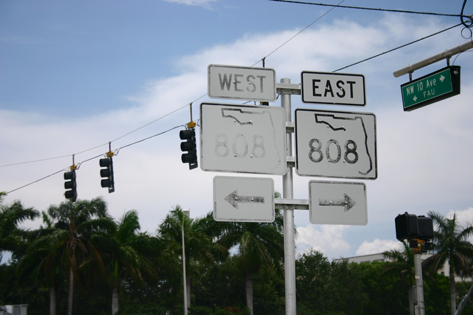
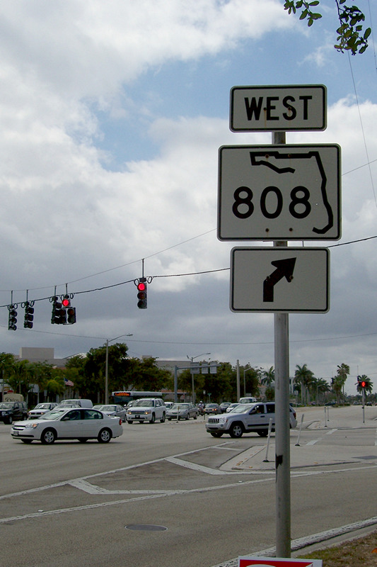
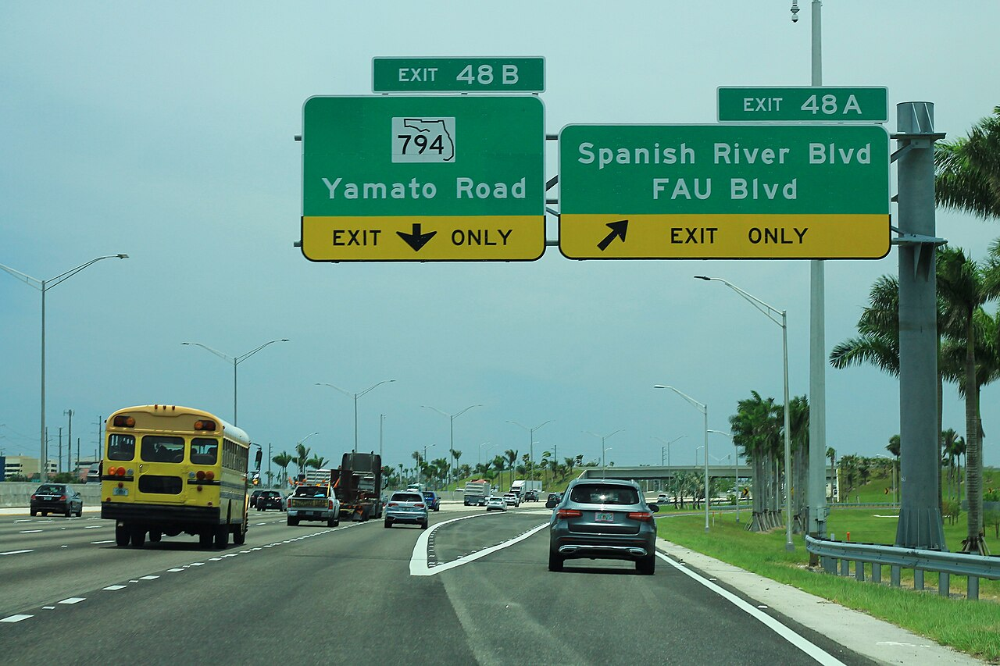
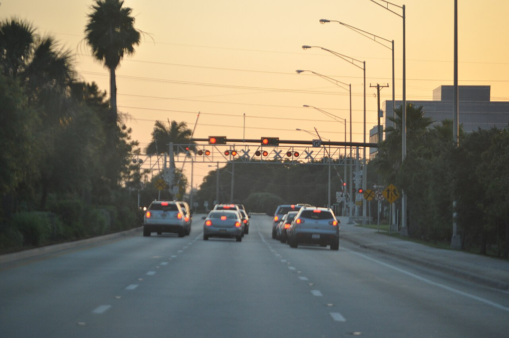
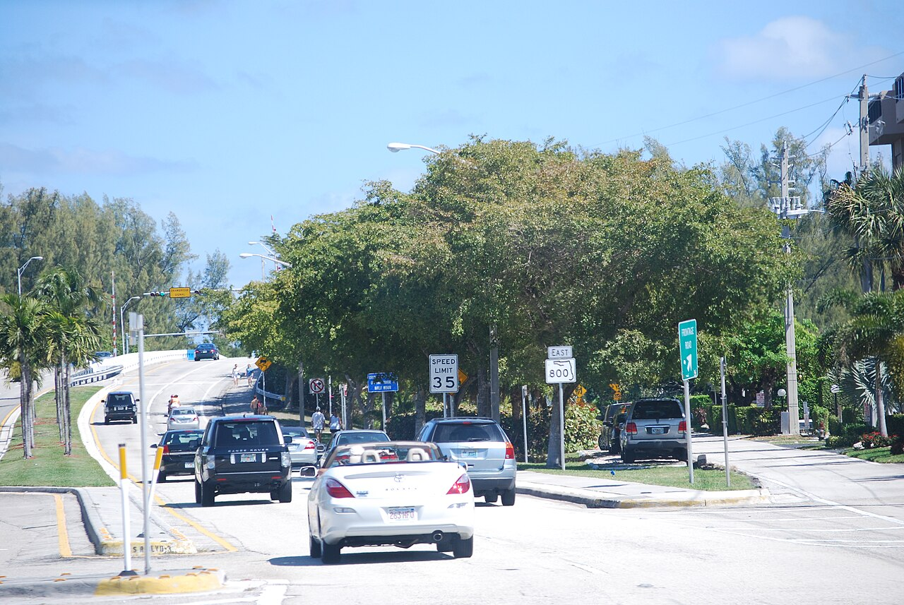
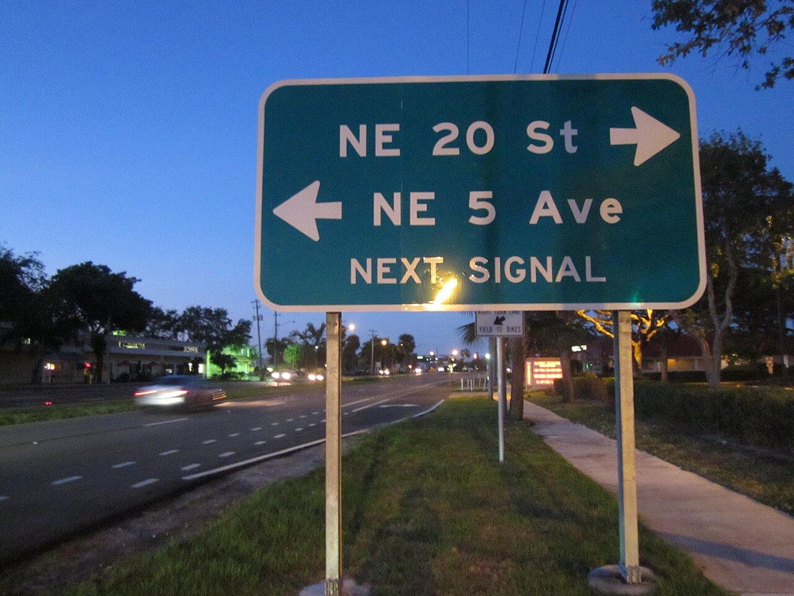
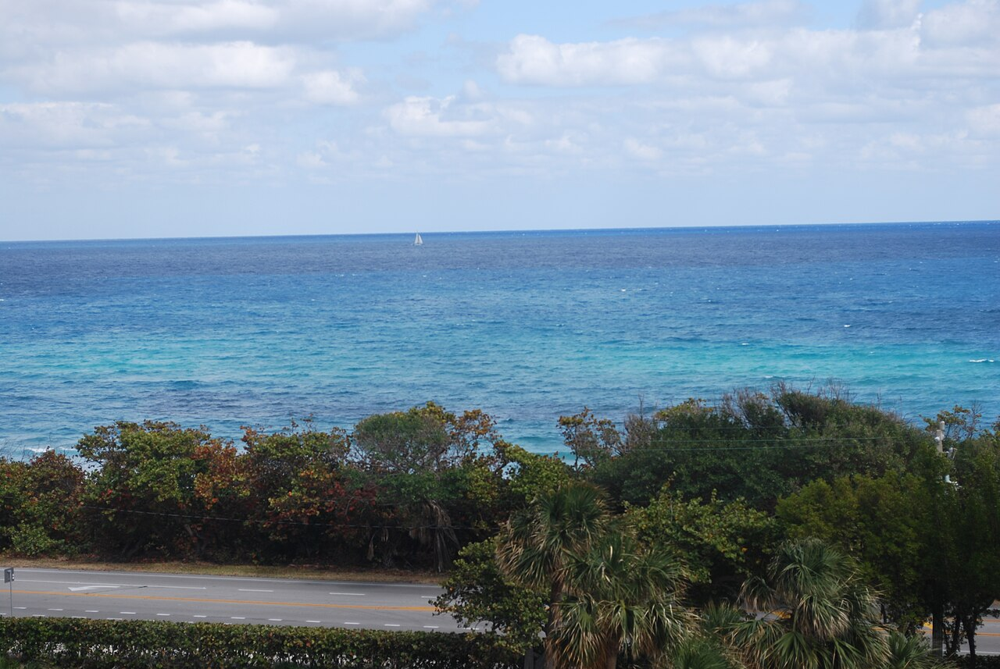
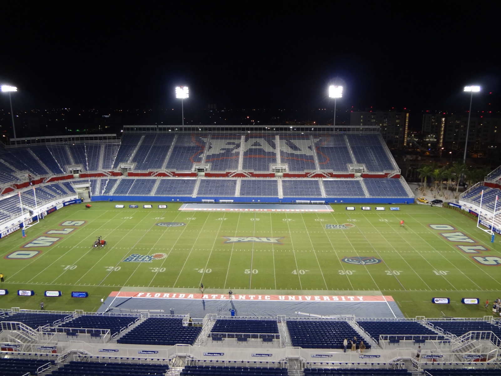

Traffic map around campus
Each segment is colored by its Annual Average Daily Traffic (AADT), the average number of vehicles per day in both directions. Click a road for details.
Busiest corridors near FAU
Average daily vehicles across each road's counted segments in the Boca Raton area.
Five-year trend
How volumes changed from 2021 to the latest count. Toggle roads below.
Rush hour math
FDOT publishes three factors with each count. They turn a daily total into what a busy hour actually looks like.
K = share of daily traffic in the design peak hour · D = share of peak-hour traffic going the heavier direction · T = share of daily traffic that is trucks. Values are averages of the road's segments in the selected year.
Owl commuter notes
Glades Road is the front door
Glades (SR 808) runs along the south edge of campus and connects FAU to I‑95, the Turnpike and Town Center. It is the busiest surface road in the study area, so plan extra time between I‑95 and Military Trail.
I‑95 dwarfs everything
The interstate just east of campus carries several times the volume of any local road. Exit 45 (Glades) and Exit 48 (Yamato / Spanish River / FAU Blvd) are the campus exits.
Try the north entrance
FAU Boulevard links campus to Spanish River Boulevard and Yamato Road. It carries a fraction of Glades' traffic and can be a calmer way in.
Game days and events
Football at the stadium and big events concentrate traffic on Glades, FAU Blvd and the I‑95 ramps. FDOT's annual averages smooth these out, so expect worse than the map on those days.
The roads
Photos of Boca Raton's main roads from Wikimedia Commons.







